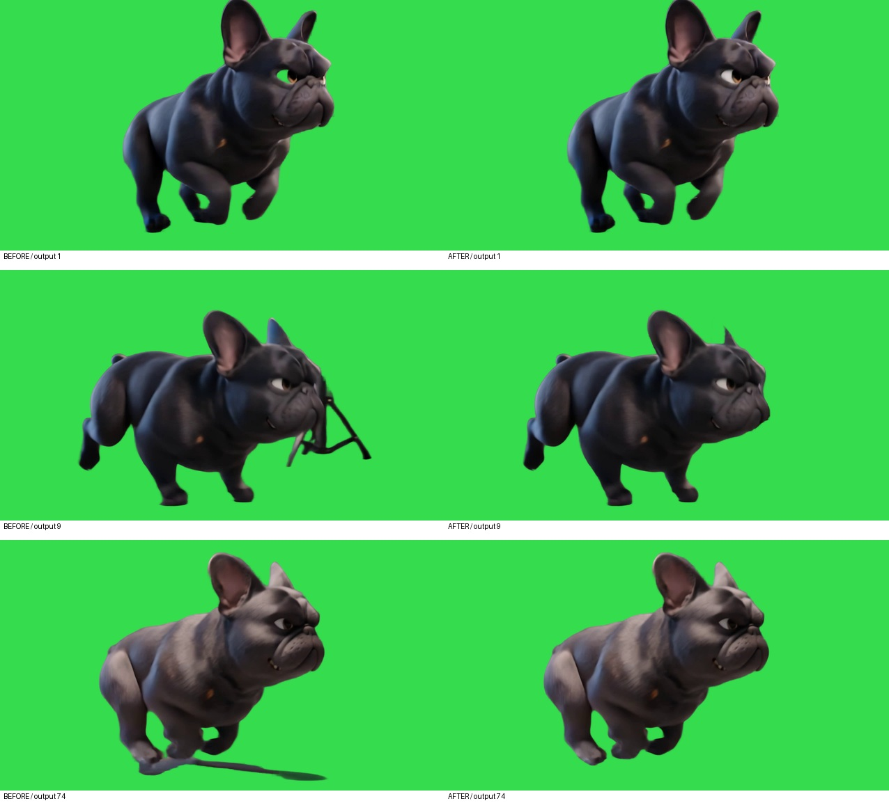

Bulldog RUN · проверка прозрачности v2
№3: исправлены остатки студийной стойки и два дефекта глаза. №5: новый Kling RUN, кадры 41–121 исходного ролика. Видео не зациклены. Сравнение №3 и проверка №5 доступны ниже.
№3 · до / после
Глаз, студийная стойка и исходная тень. В каждой строке один и тот же исходный кадр: слева предыдущая маска, справа новая.

Контрольные кадры №3 и №5
Белый, чёрный, ярко-зелёный и тёплый бежево-зелёный фоны доступны в переключателе для непрерывного просмотра.